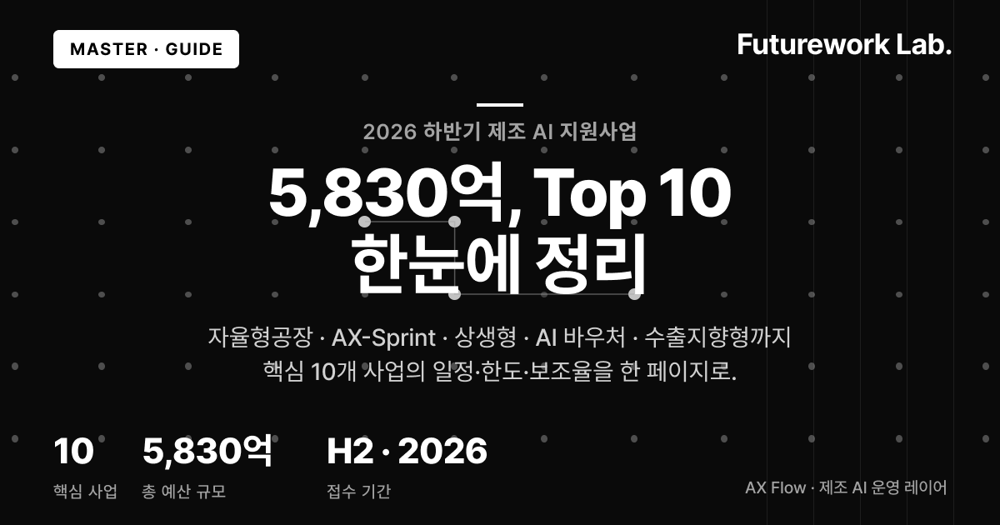
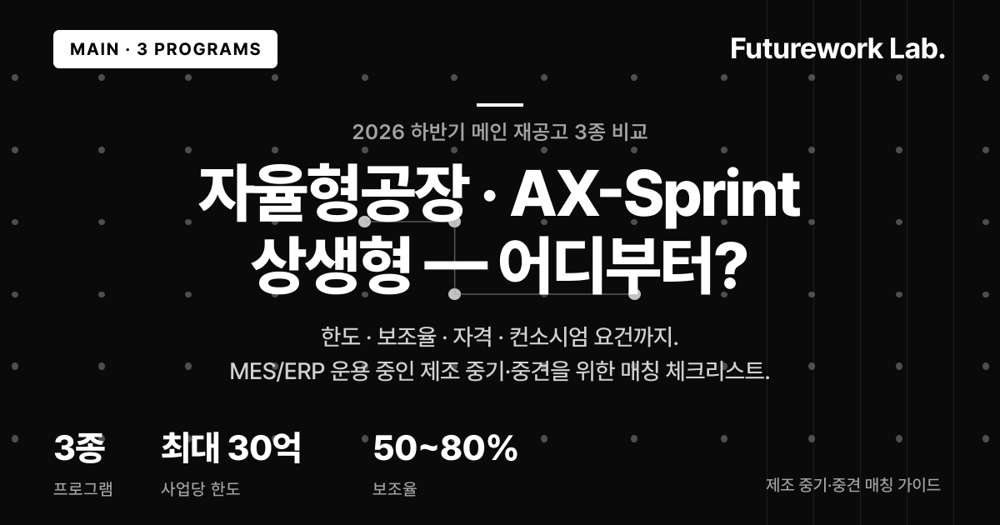
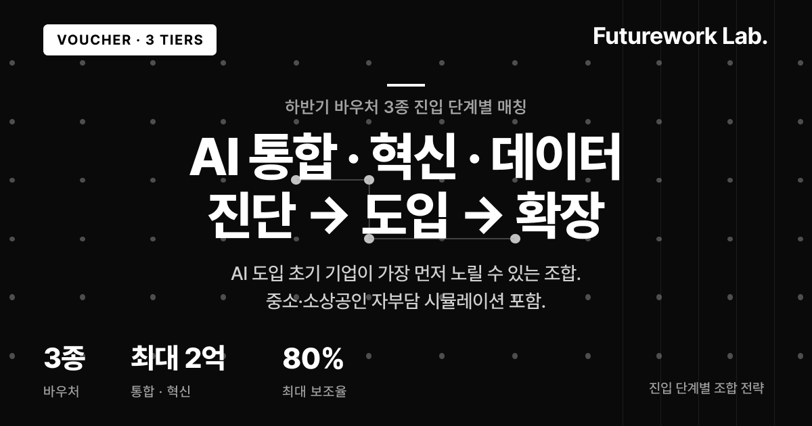
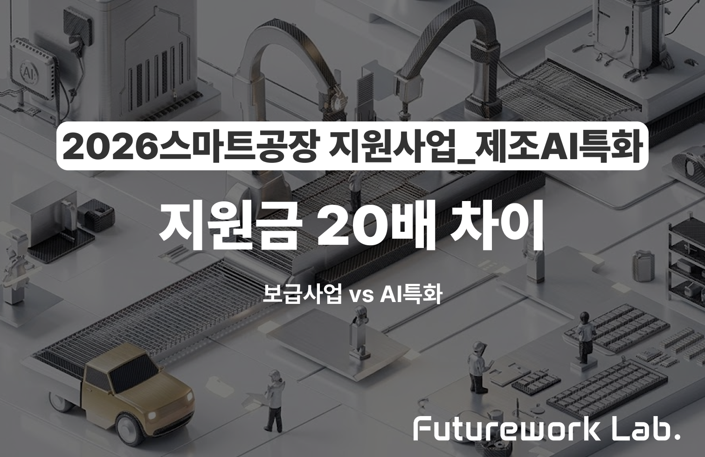
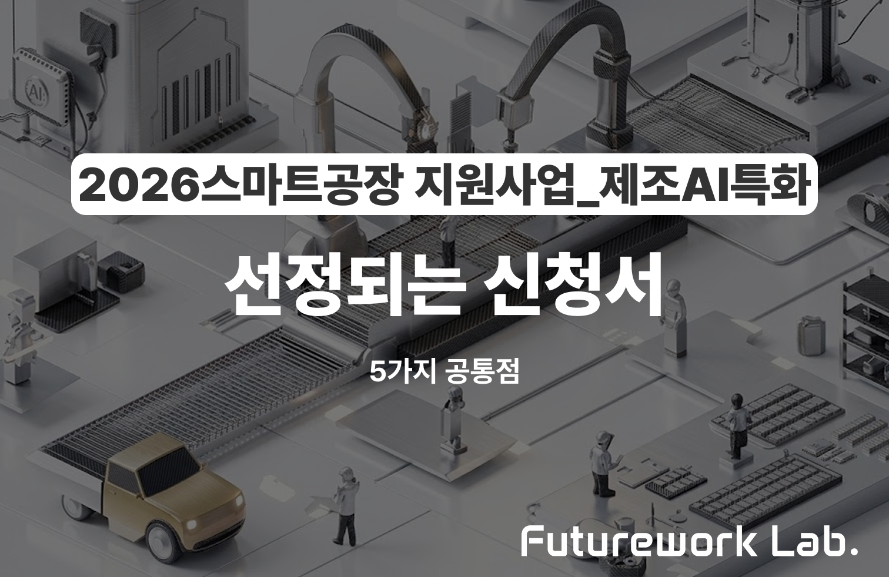
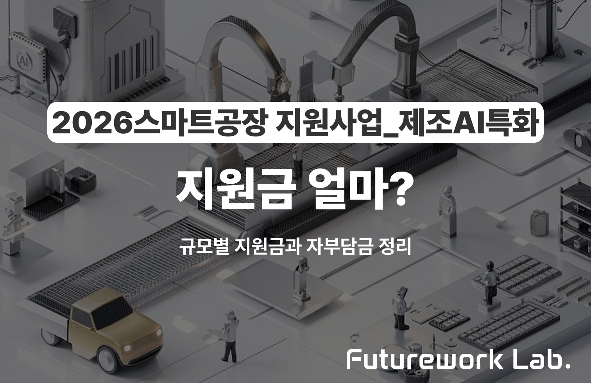
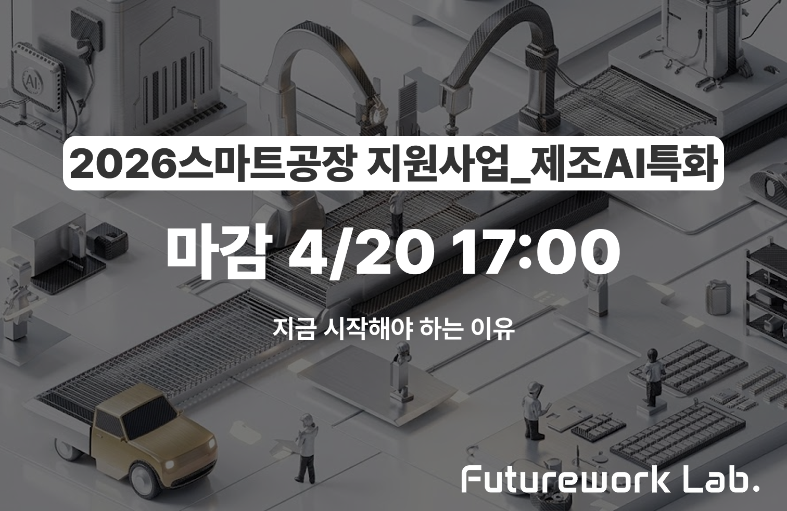
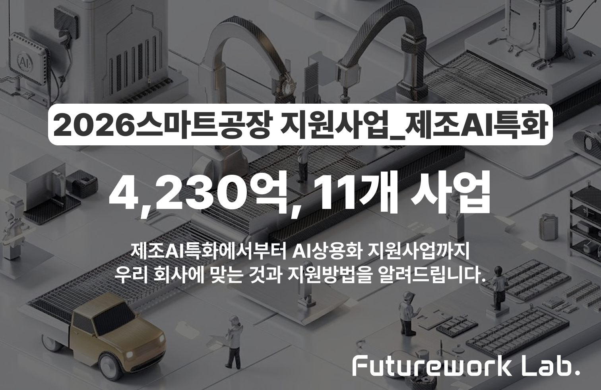
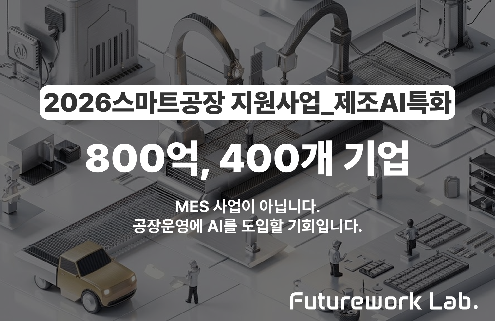

자율형공장·AX-Sprint·상생형·AI바우처·수출지향형 등 10개 사업의 접수 일정·한도·보조율·매칭 조건을 한 페이지에 정리했습니다.

한도·보조율·자격·컨소시엄 요건으로 핵심 재공고 3종을 비교합니다. MES·ERP 운용 제조 중기·중견이 먼저 노릴 사업을 매칭 체크리스트로 정리했습니다.

AI 도입 초기 기업이 가장 먼저 노릴 수 있는 바우처 3종을 진단→도입→데이터 단계별로 매칭. 중소·소상공인 활용 조합 전략과 자부담 시뮬레이션 포함.

제조 AI 솔루션을 해외로 확장하려는 기업을 위한 R&D 2종 가이드. 6월 접수·9월 선정 일정과 4대 지정분야(제조 포함) 매칭 기준을 정리했습니다.

비수도권 제조·GPU 수요 기업을 위한 지역·인프라 2종 가이드. 지자체별 6~9월 일정과 정기모집 분기별 일정을 본사 소재지·컴퓨팅 수요 기준으로 정리했습니다.

AI 상용화 사업에서 컨소시엄 구성은 서면평가 점수를 결정짓는 핵심 요소입니다.

같은 스마트공장 사업이라도 기존 보급사업과 제조AI특화는 예산, 심사기준, AI 요구수준이 다릅니다.

이미 스마트공장 사업을 수행한 기업도 제조AI특화 사업에 다시 신청할 수 있습니다.

서면평가에서 떨어지면 발표 기회조차 없습니다. 평가위원이 실제로 보는 핵심 포인트를 분석합니다.

과제당 최대 30억 원 지원이지만, 현물 인정 범위에 따라 실제 현금 부담은 크게 달라집니다.

스마트공장 사업의 테마 선택은 신청 적격 여부를 가르는 첫 번째 관문입니다.

선정률을 높이는 신청서 작성 원칙과 실전 컨소시엄 구성 전략을 정리했습니다.

기업 규모별로 실제 자부담이 얼마인지, 현물 인정 항목은 무엇인지 시뮬레이션합니다.

단기(1년, 20억)와 중기(2년, 30억)의 차이점과 기업 상황별 최적 선택 기준을 안내합니다.

스마트공장을 넘어 AI 응용제품까지. 과제당 최대 30억 원 지원 사업의 핵심을 정리합니다.

신청 마감까지 남은 시간은 한정적. 준비부터 제출까지 타임라인을 안내합니다.

3개 부처 통합공고, 총 4,230억 원 규모 11개 사업을 카테고리별로 정리했습니다.

역대 최대 규모 800억 원 예산. 제약 GMP, 식품 HACCP 등 규제 산업 중소/중견기업 대상입니다.
실패율 76%
제조 AI 프로젝트 76%가 본사업 전환에 실패합니다. 쌓인 자산 없이 검증만 반복하는 구조를 어떻게 바꿀 수 있을까요?
데이터 통합
키워드 검색이 아닌 관계 추론. ERP, MES, 수기문서, 암묵지를 하나로 연결하는 온톨로지 기술의 핵심을 설명합니다.
우선순위 60배 단축
중견 정밀가공·사출 제조사. 룰엔진+LLM 하이브리드로 우선순위 배정 1시간을 1분 이내로, 긴급 주문 의사결정 12배 단축.
월간 17h → 2~3h
화장품 ODM·화공플랜트 PM 기업. Style Cloner 4단계 파이프라인과 LLM 모델 분기로 월간 리포트 검토 17시간을 2~3시간으로 단축.
김 불량률 84% 감소
다공정 제조사. ABA Overlay 4계층과 Bayesian Optimization으로 안전 운전 범위(SOR)를 산출, 인쇄 색상 편차 57% 개선.
OCR 한국어 95%
산업단지 제조 기업. 멀티 포맷 자동 처리, 동의어 해소 5단계 매칭, Neo4j Leiden 커뮤니티 감지로 비정형 문서를 그래프로 변환.